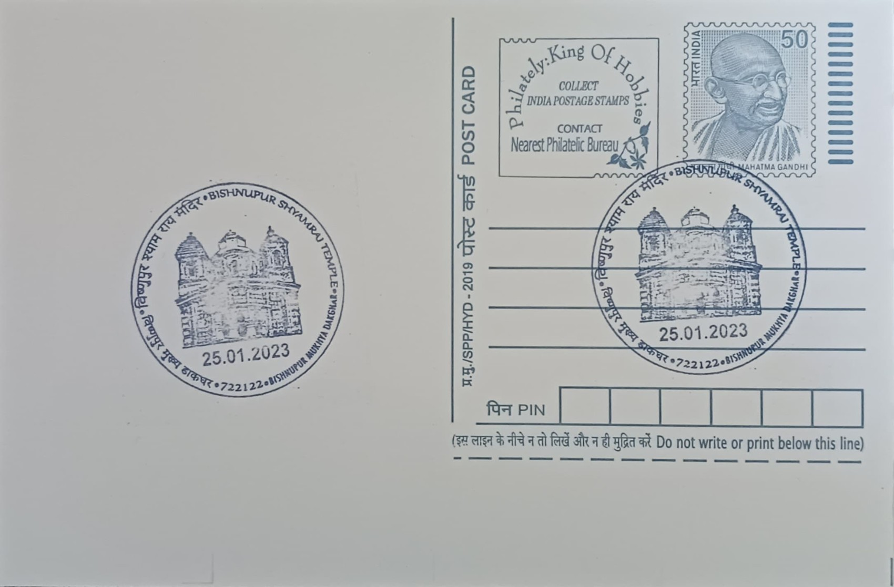

Bishnupur Shyamrai Temple
বিষ্ণুপুর শ্যামরাই মন্দির


The Shyam Rai Temple takes its name from Shyam Rai, an epithet of Krishna, to whom the shrine is dedicated as its presiding deity. An inscribed foundation plaque within the temple records that it was raised in 1643 by Raghunath Singha, a ruler of the Malla dynasty that governed the Mallabhum kingdom from its seat at Bishnupur. Local tradition holds it to be the earliest pancharatna, or five-towered, temple built in Bengal, a form that subsequently became a template for later Malla-era temples across the region, making Bishnupur the proving ground for a roof style that would spread well beyond Bankura district.
As a protected Krishna temple, the Shyam Rai occupies a central place in the religious and architectural landscape of Bishnupur, which served as the capital of the Malla kings from roughly the seventeenth century onward. It is classified today as a ticketed centrally protected monument under the Archaeological Survey of India's Kolkata Circle, placing it among the small group of Bishnupur's terracotta shrines singled out for formal conservation and public access. Its significance rests on a double claim: it is both a working example of Vaishnava temple worship tied to the Malla court's patronage of Krishna devotion, and, according to the ASI's own assessment, the most profusely carved of all the terracotta temples surviving in the town.
The temple stands on a low laterite platform with a nearly square base measuring about 11.4 by 11.4 metres and rises to roughly 10.7 metres above the platform, its pancharatna roofline formed by one octagonal central tower flanked by four smaller square corner towers. Builders working in the Bengal delta, where quarried stone was scarce, developed a technique of shaping and kiln-firing clay panels that were then set into the brick walls, allowing a level of narrative detail difficult to achieve in stone. These terracotta plaques cover the exterior and interior wall surfaces in continuous bands, combining geometric and floral borders with figural scenes drawn from the Krishna Leela, the Ramayana, and episodes of the Mahabharata.
What distinguishes the Shyam Rai from Bishnupur's other terracotta shrines is the sheer density and refinement of its carved surface, which the Archaeological Survey of India itself singles out as the most elaborately decorated of the town's temple group. Panels are arranged in registers that read almost like illustrated manuscript pages, moving from courtly and hunting scenes near the base to devotional episodes from Krishna's life higher on the facade, a layout that let largely non-literate worshippers follow familiar epic narratives simply by walking around the structure. The octagonal central spire, raised above the four corner towers, gives the roofline a stepped profile that later pancharatna temples in the region would echo but rarely surpass in ornamental density.
The temple is maintained today as a centrally protected monument by the Archaeological Survey of India's Kolkata Circle, with ticketed entry and, as part of recent accessibility efforts at Bishnupur's monuments, approach paths fitted with tactile tiles and information boards in Braille for visually impaired visitors. It stands alongside other Malla-era shrines such as the Jor Bangla and Rasmancha within Bishnupur's compact monument zone, which together draw heritage tourists and researchers studying Bengal's terracotta tradition. The ASI's ongoing upkeep of the structure has kept it accessible as a functioning heritage site rather than a ruin, allowing visitors to examine its carved facade at close range much as the Malla court's subjects would have centuries ago.
| Date of Introduction | January 25, 2023 |
|---|---|
| Address | Sub Postmaster, |
| Bishnupur SO, | |
| Bankura (dt.), West Bengal - 722122. |